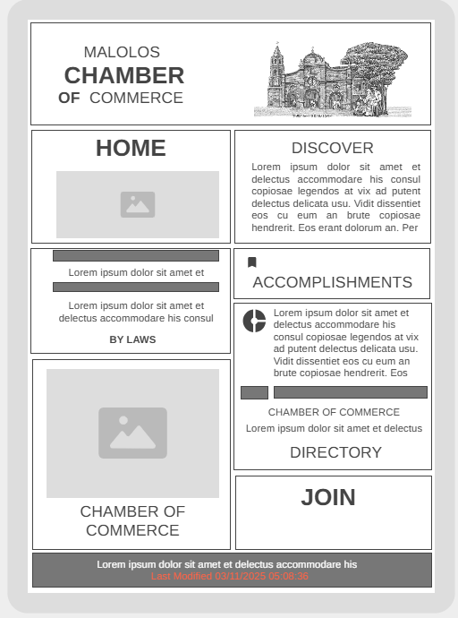

Malolos Chamber of Commerce - This name reflects the local business community in Malolos, promoting economic growth and networking.
1. To provide business owners and entrepreneurs with resources, networking events, and membership opportunities.
2. To serve as a hub for community events, economic development, and business-to-business engagement.
Heading Font: 'Poppins', sans-serif (Used for headings and titles)
Body Font: 'Open Sans', sans-serif (Used for paragraphs and general content)
A wireframe sketch for mobile and desktop views is provided below:
